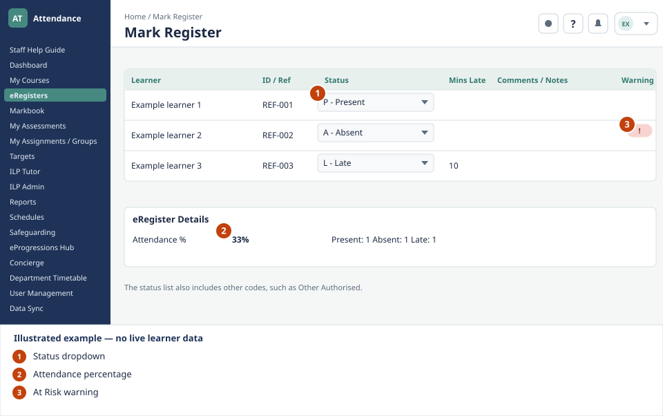

Daily work
eRegisters and attendance
What to look for

- Status dropdown. Choose the appropriate attendance code for each learner, including P — Present, A — Absent or L — Late.
- Attendance percentage. Find the register's Attendance % in the eRegister Details summary below the learner list.
- At Risk warning. Look for the red warning icon in the right-hand warning column.
Mark attendance for any lesson directly in the portal. The system records Present, Absent, and Late statuses and updates the learner's overall attendance percentage in real time. Learners below the target threshold are automatically highlighted as At Risk.